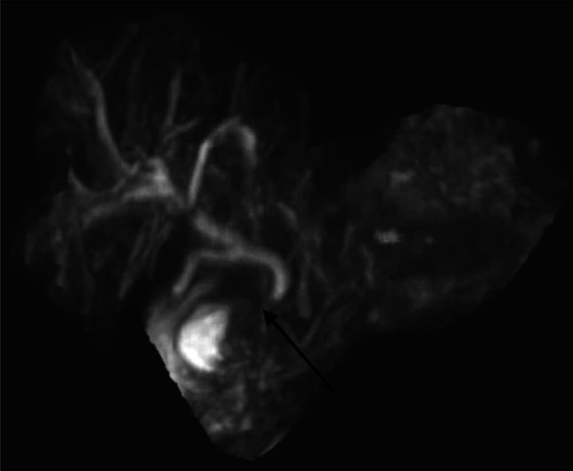
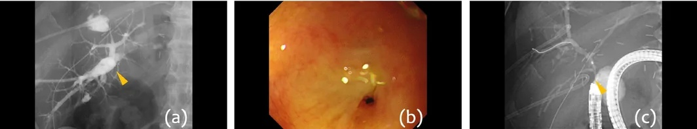

113 — Hẹp miệng nối mật–ruột sau cắt nang ống mật chủ (hepaticojejunostomy stricture): "giãn đường mật + sốt" ở người đã mổ 5 năm trước
Tags: pattern:hep-mieng-noi pattern:gian-duong-mat-trong-gan pattern:khuyet-thuoc vung:duong-mat vung:gan anatomy:duong-mat protocol:MRCP protocol:CT-bung-co-can-quang protocol:US-bung protocol:PTC score:Todani incidentaloma:gian-duong-mat
Mức chắc chắn (certainty): tổng hợp y văn (literature synthesis) — ghép loạt 100 ca Roux-en-Y hepaticojejunostomy (RYHJ) lành tính (BMC 2026, PMC12989140), loạt 40 ca hẹp miệng nối mật–ruột (BBAS) điều trị qua da (PMC12968610), meta-analysis 1.903 trẻ cắt nang ống mật chủ (PMC41636754), 3 ca minh hoạ có ảnh (PMC13108644, PMC13650495, PMC13444531). Không có ca do nhóm tự chụp.
Câu hỏi thực hành: nam 32 tuổi, cắt nang ống mật chủ + Roux-en-Y hepaticojejunostomy cách đây 6 năm. Nay sốt 39 °C, đau hạ sườn phải, vàng da nhẹ, bạch cầu 16,2 G/L, bilirubin toàn phần 3,8 mg/dL, ALP 410 U/L, GGT 520 U/L. Siêu âm: đường mật trong gan hai bên giãn, không thấy ống mật chủ (đã cắt), không thấy sỏi. Câu hỏi: giãn đường mật này là hẹp miệng nối, sỏi, hay "bình thường sau mổ"? Cần chụp gì tiếp và xử trí ra sao? Bài chốt ba quyết định: (1) ở người đã có miệng nối mật–ruột, "giãn đường mật + sốt + đau" gần như mặc định là hẹp miệng nối cho tới khi chứng minh khác — hẹp gặp 20% trong loạt 100 ca RYHJ, viêm đường mật tái diễn 39% (PMC12989140); (2) MRCP là cửa chốt không xâm lấn (hẹp khu trú tại miệng nối + giãn trên hẹp), CT để tìm ổ áp-xe/sỏi/khối; (3) đường vào điều trị phụ thuộc giải phẫu Roux-en-Y: nong bóng qua da (PTC) là mặc định, nội soi ruột non (single-balloon) hoặc mổ lại khi thất bại — không chờ "tự hết".
1. Tổng quan bệnh học – cơ chế hình ảnh: vì sao miệng nối lại hẹp, và vì sao hình ảnh "nói" được điều đó
- Bối cảnh giải phẫu: nang ống mật chủ (choledochal cyst / congenital biliary dilatation, Todani I–V — xem bài 107) được điều trị chuẩn bằng cắt toàn bộ nang + Roux-en-Y hepaticojejunostomy (RYHJ). Sau mổ, không còn ống mật chủ: đường mật trong gan đổ trực tiếp vào quai hỗng tràng biệt lập (Roux limb) qua miệng nối tận–bên ở rốn gan. Đây là lý do không thể đo "ống mật chủ" và không thể soi ERCP thường quy (phải đi qua 60–100 cm quai Roux).
- Cơ chế hẹp (4 cơ chế, xếp theo tần suất thực hành):
- Thiếu máu miệng nối: nguồn máu đường mật là đám rối quanh ống mật (axial blood supply) — bóc tách quá cao ở rốn gan hoặc đốt điện làm mất cấp máu → xơ hóa, co rút trong 6–24 tháng.
- Rò mật / nhiễm khuẩn quanh miệng nối: dịch mật kích thích + viêm → xơ; đây là yếu tố dự báo độc lập trong loạt 100 ca: rò mật sau mổ p = 0,021, viêm đường mật sớm p < 0,001 (PMC12989140).
- Kỹ thuật: miệng nối nhỏ, căng, không niêm mạc–niêm mạc; miệng nối cao ở rốn gan khó làm rộng (Hepp–Couinaud được cho là bảo vệ).
- Ứ mật → sỏi → viêm → hẹp thêm (vòng xoắn bệnh lý): hẹp nhẹ làm chậm dòng mật → sỏi bùn/sỏi sắc tố trên hẹp → viêm đường mật tái diễn → xơ thêm.
- Tần suất — bốn con số phải nhớ:
- Hẹp miệng nối 20% (20/100) trong loạt RYHJ lành tính (52% chỉ định là nang ống mật chủ), viêm đường mật tái diễn 39% (PMC12989140).
- Hẹp cao hơn ở nhóm tổn thương đường mật sau cắt túi mật so với nang ống mật chủ (cùng loạt) — tức chất lượng mô đường mật tại miệng nối quan trọng hơn "kỹ thuật miệng nối" đơn thuần.
- Viêm đường mật sau HJ 3,05% (meta-analysis 1.903 trẻ, HD 1,55%; HJ được ưu tiên vì viêm dạ dày–trào ngược chỉ 0,87% so với 8,83% ở hepaticoduodenostomy) (PMC41636754).
- Thời điểm: phần lớn hẹp có triệu chứng trong 6–24 tháng đầu, nhưng hẹp muộn nhiều năm vẫn gặp; trung vị chính xác theo thời gian: chưa rõ — cần tra (các loạt theo dõi ngắn, trung vị 9 tháng trong PMC12989140 nên chưa đủ để mô tả đuôi muộn).
- TẠI SAO MRCP thấy hẹp — vật lý đơn giản: MRCP dùng chuỗi T2 rất nặng (heavily T2-weighted, TE 600–1.000 ms) → dịch mật (nước tự do) sáng, mô xơ/sợi collagen tối. Hẹp = đoạn mất tín hiệu hoặc thắt nhỏ tại miệng nối; trên hẹp = cột dịch giãn. Vì không dùng thuốc cản quang, MRCP không phụ thuộc chức năng gan/thận — chụp được cả khi bilirubin cao (khác CT có cản quang và HBP với gadoxetate).
- TẠI SAO CT vẫn cần: CT 1–2 mm có cản quang thì cổng tĩnh mạch cho thành ống mật, nhu mô gan, ổ áp-xe, sỏi calci, hạch và khối u. Sỏi sắc tố thường đồng đậm độ mật (isodense) → CT có thể bỏ sót, MRCP tốt hơn. Khí trong đường mật (pneumobilia) là bình thường sau HJ, không phải dấu viêm.
- TẠI SAO "giãn đường mật" không đồng nghĩa "tắc": sau khi cắt nang, kho dự trữ ngoài gan mất đi, đôi khi đường mật trong gan giãn dai dẳng không tắc; ngưỡng thực hành: đường mật trong gan ngoại vi > 2 mm hoặc > 40% so với phim cũ mới gọi là giãn bệnh lý. Chẩn đoán hẹp cần hình ảnh hẹp tại miệng nối + triệu chứng/sinh hóa, không chỉ số đo.
2. Mẫu hình + chẩn đoán phân biệt theo vị trí (Gamut)
- Mẫu hình cốt lõi: bệnh nhân đã có miệng nối mật–ruột, đến với sốt ± đau hạ sườn phải ± vàng da (Charcot), bilirubin/ALP/GGT tăng, trên hình ảnh có giãn đường mật trong gan hai bên và một chỗ thắt tại rốn gan.
- Gamut theo vị trí tổn thương:
- Tại miệng nối (rốn gan): hẹp xơ lành tính (thể hay gặp nhất), hẹp do staple/clip kim loại cắm vào lòng (ca PMC13108644), hẹp do tái phát u/ung thư đường mật tại miệng nối.
- Trong đường mật trên hẹp: sỏi/sỏi bùn sắc tố (thường nhiều ổ, khu trú thùy trái hoặc hai bên), hẹp thứ phát do viêm xơ quanh ống (secondary sclerosing cholangitis), áp-xe đường mật (cholangitic abscess).
- Ngoài miệng nối: hội chứng quai tới (afferent loop syndrome) sau Roux-en-Y — quai hỗng tràng ứ dịch, giãn, có thể chèn miệng nối; hẹp/malrotation của quai Roux; thoát vị nội (internal hernia) sau mổ.
- Nhu mô gan: xơ gan ứ mật thứ phát (khi hẹp kéo dài nhiều năm), ung thư đường mật trong gan trên nền ứ mật mạn.
- Mnemonic 4S cho "giãn đường mật sau miệng nối mật–ruột": Sẹo (hẹp miệng nối) – Sỏi (sỏi/sỏi bùn trên hẹp) – Sump (ứ quai tới) – Sinh u (tái phát/ung thư đường mật). Thêm S thứ năm khi cấp cứu: Sốc nhiễm khuẩn đường mật (Charcot–Reynolds) — cần dẫn lưu mật trong 24 giờ, không chờ chẩn đoán đầy đủ.
- Phân biệt với hẹp miệng nối sau ghép gan (bài 133): cùng là "hẹp miệng nối", nhưng sau ghép còn động học mạch gan, thải ghép, cholangiopathy thiếu máu — ở bài 113 (nang ống mật chủ) không có mạch ghép, nên hẹp là biến chứng cơ học/xơ tại chỗ, và ung thư đường mật là mối lo riêng (nền nang ống mật chủ).
3. Bảng so sánh phân biệt (ma trận đối chiếu)
| Thực thể (entity) | Hình ảnh điển hình (US/CT/MRCP) | Chốt vào (rule-in) | Chốt loại (rule-out) | Gợi ý xác nhận |
|---|---|---|---|---|
| Hẹp miệng nối xơ lành tính | MRCP: thắt khu trú ngắn tại rốn gan, giãn đường mật trong gan hai bên; CT: thành dày nhẹ tại chỗ nối, không khối | Thắt ngắn tại đúng vị trí miệng nối + giãn trên hẹp + sốt/ALP tăng | Không có chỗ thắt (giãn đều, không chênh) → nghĩ giãn tồn tại sau mổ; khối mềm ngấm thuốc → nghĩ u | MRCP; đáp ứng nong bóng (test điều trị) |
| Sỏi/sỏi bùn trên hẹp | MRCP: khuyết tín hiệu trong lòng ống giãn, bờ tròn, có thể "đầy" cả nhánh; CT: sỏi calci chỉ 1/3 trường hợp thấy | Khuyết tín hiệu di động/đa ổ trong ống giãn + tiền sử viêm đường mật tái diễn | Không khuyết tín hiệu trên MRCP 3D chất lượng tốt → ít khả năng sỏi | MRCP + cholangioscopy qua da (bài 138) nếu cần lấy sỏi |
| Hội chứng quai tới (afferent loop) | CT: quai hỗng tràng giãn chứa dịch, hình chữ U/C, không có hẹp tại miệng nối; MRCP: cột dịch dừng ở miệng nối do ứ, không do thắt | Quai ruột giãn > 3 cm + mức dịch–khí, nôn dịch mật không có thức ăn | Có chỗ thắt thực sự tại miệng nối → không phải thuần quai tới | CT có cản quang; so sánh MRCP trước/sau khi đặt dẫn lưu |
| Tái phát/ung thư đường mật tại miệng nối | CT: khối mềm ngấm thuốc thì muộn, dày thành không đều > 5 mm; MRCP: hẹp dài, bờ nham nhở; có thể hạch rốn gan | Hẹp dài + khối + hạch + giãn tiến triển nhanh, không đáp ứng nong | Hẹp ngắn, bờ nhẵn, đáp ứng nong nhiều lần (vẫn cần theo dõi) | CT/MRI có cản quang + sinh thiết qua da khi nghi ngờ |
| Áp-xe đường mật (cholangitic abscess) | CT: ổ dịch trong gan, vỏ ngấm thuốc, khí trong ổ; MRCP: ổ T2 cao nối với nhánh mật hẹp | Sốt cao + ổ dịch trong gan + bạch cầu tăng mạnh | Không ổ dịch, chỉ giãn ống → chưa áp-xe | CT; dẫn lưu qua da (bài 910) |
- Ảnh minh hoạ 1 — MRCP ca hẹp miệng nối do staple phẫu thuật cắm vào lòng (mũi tên):

MRCP xung nặng T2: cột dịch giãn trong gan, thắt tại miệng nối (mũi tên) và quai hỗng tràng phía dưới. Nguồn: ACG Case Rep J 2026 (PMC13108644), CC BY-NC-ND 4.0 — nguyên bản, không crop.- Ảnh minh hoạ 2 — cholangiography qua da cho thấy không có thuốc qua miệng nối dù bơm đủ, kèm hình nội soi chỗ sẹo và bóng nội soi ruột non:

(a) Cholangiography nhánh hậu – bên: cột thuốc dừng tại miệng nối (mũi tên vàng), không vào hỗng tràng. (b) Nội soi: sẹo trắng, không thấy lòng miệng nối. (c) Nội soi ruột non một bóng tiếp cận miệng nối. Nguồn: Digestive Endoscopy 2026 (PMC13650495), CC BY 4.0 — chuyển WebP → JPEG, giữ nguyên khung 3 ô.4. Protocol chụp + phân loại/phân độ
- Siêu âm (đầu tay, mọi ca): đo đường kính đường mật trong gan (bình thường ≤ 2 mm ở ngoại vi, ≤ 6 mm ở rốn gan), tìm sỏi, khí trong đường mật, ổ dịch trong gan, đánh giá dịch quanh gan. Giới hạn: không thấy miệng nối ở phần lớn bệnh nhân (hơi ruột che), không loại trừ hẹp.
- MRCP (chuẩn không xâm nhập): nhịn ăn 4–6 giờ, chuỗi SSFSE/HASTE 3D heavily T2W, lát 1–3 mm, MIP 3D + ảnh nguồn axial; không cần cản quang. Đọc theo 4 câu: (1) có chỗ thắt tại miệng nối không? (2) dài bao nhiêu mm? (3) trên hẹp giãn bao nhiêu? (4) có khuyết tín hiệu (sỏi) không? Cảnh báo: quai hỗng tràng không đầy dịch có thể tạo "hẹp giả" — luôn đối chiếu ảnh nguồn và ảnh T2 axial.
- CT bụng có cản quang (khi sốt/đau, nghi biến chứng): thì cổng tĩnh mạch 1–2 mm + thì muộn; tìm áp-xe, sỏi calci, khối, hạch, hẹp quai Roux, thoát vị nội. Không dùng CT để "loại trừ hẹp" khi MRCP đã thấy thắt.
- Cholangiography qua da (PTC): vừa chẩn đoán (đo độ dài hẹp, số nhánh bị ảnh hưởng) vừa điều trị (nong bóng, đặt catheter xuyên miệng nối). Chỉ định: nhiễm khuẩn đường mật nặng (Charcot–Reynolds), hẹp không tiếp cận được bằng nội soi, hoặc cần dẫn lưu trước mổ.
- Nội soi ruột non (single-balloon enteroscopy) + ERCP: đường vào ngược dòng qua quai Roux; thành công phụ thuộc độ dài quai và giải phẫu. Khi tắc hoàn toàn, có thể dùng nối từ tính (magnetic compression anastomosis) sau khi tạo đường qua da (ca PMC13650495).
- Hệ phân loại dùng trong bài:
- Todani I–V cho nang ống mật chủ (chi tiết ở bài 107) — quyết định kiểu cắt nang và vị trí miệng nối, do đó ảnh hưởng nguy cơ hẹp (Todani IVa có thành phần trong gan → miệng nối phức tạp hơn).
- Không có RADS/điểm chuẩn cho hẹp miệng nối mật–ruột. Thực hành ghi 4 tham số: (1) vị trí (miệng nối / trên hẹp / quai tới), (2) chiều dài hẹp (khu trú < 5 mm vs dài ≥ 5 mm), (3) đường kính chỗ hẹp so với ống trên hẹp, (4) biến chứng (sỏi, áp-xe, xơ gan ứ mật). Ngưỡng mm chính thức: chưa có đồng thuận — cần tra.
- Kết quả định lượng của hai chiến lược (để tư vấn):
- Qua da (PTCS-assisted): 90,6% (29/32) đạt "điều trị thành công"; thông suốt ban đầu 58,1% (1 năm) và 41,9% (2 năm); thông suốt tích lũy 74,3% – 59,7% – 49,8% – 34,8% ở 1–3–5–7 năm; thời gian lưu catheter trung vị 6 tháng (2–109) — nghĩa là phải giữ catheter xuyên miệng nối hàng tháng, không phải "nong một lần là xong" (PMC12968610).
flowchart TD
A[Đã có miệng nối mật-ruột + giãn đường mật trong gan] --> B{Sốt / đau / vàng da?}
B -->|Không| C[So phim cũ, đo đường kính; MRCP nếu nghi ngờ]
B -->|Có| D[Sinh hóa: bilirubin, ALP, GGT, BC, cấy máu]
D --> E[MRCP + CT bụng có cản quang]
E --> F{Có thắt tại miệng nối?}
F -->|Không| G[Tìm 4S còn lại: sỏi, quai tới ứ, u, giãn tồn tại]
F -->|Có| H{Sốc nhiễm khuẩn / Charcot-Reynolds?}
H -->|Có| I["Dẫn lưu mật qua da (PTBD) ngay + kháng sinh"]
H -->|Không| J{Hẹp ngắn, không có khối?}
J -->|Có| K[Nong bóng qua da nhiều lần + catheter xuyên miệng nối 6 tháng]
J -->|Không| L[Nội soi ruột non / nối từ tính / mổ lại RYHJ]
K --> M{Kiểm tra sau 3-6 tháng: còn hẹp?}
M -->|Còn| L
M -->|Hết| N[Theo dõi 6-12 tháng; tầm soát ung thư đường mật]
I --> J
5. Biến thể bình thường và cạm bẫy
- Khí trong đường mật (pneumobilia) là bình thường sau HJ — thấy khí lan trong nhánh mật không đồng nghĩa viêm đường mật/áp-xe khí. Chỉ gọi bệnh lý khi có dịch quanh, thành dày, sốt.
- Giãn đường mật "tồn tại" sau cắt nang: một số bệnh nhân giãn dai dẳng không tắc; nếu không triệu chứng, bilirubin/ALP bình thường, chỉ theo dõi. Đừng đặt stent "vì hình ảnh đẹp".
- "Hẹp giả" trên MRCP: quai Roux không chứa đủ dịch hoặc không nằm trong trường chụp → cột dịch dừng ở miệng nối, trông như tắc hoàn toàn. Xem ảnh axial nguồn + chụp thì muộn/3D khác; đối chiếu với cholangiography khi cần.
- Sỏi sắc tố đồng đậm độ trên CT: không loại trừ sỏi khi CT âm tính; MRCP là chuẩn. Ngược lại, bóng khí nhỏ có thể giả làm khuyết tín hiệu trên MRCP → đọc cả ảnh nguồn.
- Staple/clip tại miệng nối: gây hẹp thực sự (ca PMC13108644) và artifact trên CT/MRCP; artifact kim loại có thể che một hẹp ngắn. Nếu lâm sàng mạnh mà hình ảnh "không rõ", cholangiography qua da là chốt.
- Hẹp + giãn tiến triển nhanh, không đáp ứng nong = phải lo ung thư đường mật: nền nang ống mật chủ vẫn là yếu tố nguy cơ ung thư đường mật dù đã cắt nang; khối tại miệng nối phải sinh thiết, không "nong rồi theo dõi" nhiều lần. Tỷ lệ chính xác sau cắt nang: chưa rõ — cần tra.
- Sai vị trí đo: đo "đường mật giãn" ở nhánh gần rốn gan luôn lớn hơn ngoại vi; dùng cùng một mốc giải phẫu khi so phim cũ và ghi mm vào báo cáo.
6. Tự lượng giá — Blind Quiz
Ca 1 — Nam 32 tuổi, mổ cắt nang ống mật chủ 6 năm trước, nay sốt – đau hạ sườn phải – vàng da nhẹ. Nhìn ảnh, mô tả trước khi mở đáp án.
- Gợi ý: bệnh nhân không còn ống mật chủ; đường mật trong gan giãn; có một chỗ thắt ở rốn gan.
- Câu hỏi: (1) Dấu hiệu chính? (2) Ba chẩn đoán phân biệt? (3) Dấu hiệu nào chốt chẩn đoán? (4) Bước tiếp theo?
Bấm để hiện đáp án (findings + chẩn đoán)
- Dấu hiệu: giãn đường mật trong gan, thắt khu trú tại miệng nối (mũi tên), phía dưới là quai hỗng tràng; không có khuyết tín hiệu lớn trong lòng ống giãn.
- Chẩn đoán: hẹp miệng nối mật–ruột (HJ stricture) — trong ca nguồn, nguyên nhân là staple phẫu thuật cắm vào lòng miệng nối (ACG Case Rep J 2026, PMC13108644); hình ảnh fluoroscopy sau đó xác nhận staple, và gỡ staple qua nội soi làm hết tắc.
- Vì sao: mô xơ/staple chiếm lòng → cột dịch mật dừng lại → giãn trên hẹp; MRCP T2 nặng làm dịch sáng, mô xơ/kim loại tối.
- Phân biệt: sỏi/sỏi bùn trên hẹp (khuyết tín hiệu), hội chứng quai tới (quai giãn, không thắt), tái phát/ung thư đường mật (khối, hẹp dài).
- Nguồn ảnh: ACG Case Rep J 2026, PMCID PMC13108644, CC BY-NC-ND 4.0 — nguyên bản.
Ca 2 — Cùng bệnh cảnh, nhưng MRCP không kết luận được vì quai Roux không đầy dịch. Cholangiography qua da được thực hiện.
- Câu hỏi: (1) Thuốc cản quang đi tới đâu? (2) Vì sao phải dùng đường qua da thay vì ERCP thường? (3) Hai lựa chọn điều trị khi hẹp hoàn toàn?
Bấm để hiện đáp án
- (a) Bơm thuốc qua nhánh hậu – bên phải: cột thuốc dừng tại miệng nối (mũi tên vàng), không có thuốc vào hỗng tràng → tắc hoàn toàn tại miệng nối; (b) nội soi thấy sẹo trắng, không thấy lòng; (c) nội soi ruột non một bóng tiếp cận.
- Vì sao qua da: giải phẫu Roux-en-Y làm ERCP thường không tới được miệng nối; đường qua da vừa chẩn đoán vừa dẫn lưu.
- Điều trị hẹp hoàn toàn: nong bóng + catheter xuyên miệng nối nhiều lần, hoặc nối từ tính (magnetic compression) qua nội soi ruột non (ca nguồn), hoặc mổ lại RYHJ khi thất bại.
- Nguồn ảnh: Digestive Endoscopy 2026, PMCID PMC13650495, CC BY 4.0 (đã chuyển WebP → JPEG).
Ca 3 — Không có ảnh (ca lâm sàng – hình ảnh): nữ 45 tuổi, RYHJ 12 năm trước; không sốt, không đau, nhưng ALP 320 U/L, GGT 290 U/L; siêu âm giãn đường mật trong gan độ 2, MRCP không thấy chỗ thắt, không sỏi; CT không khối. Câu hỏi: gọi là hẹp miệng nối được không, và làm gì tiếp?
Bấm để hiện đáp án
- Không — không có chỗ thắt trên MRCP chất lượng tốt, không triệu chứng nhiễm khuẩn; đây có thể là giãn đường mật tồn tại sau cắt nang hoặc xơ gan ứ mật sớm.
- Việc làm: so phim cũ (đo cùng mốc), xét nghiệm bilirubin/albumin/tiểu cầu, đàn hồi gan (FibroScan) để tầm soát xơ gan ứ mật; theo dõi 6–12 tháng bằng MRCP; chỉ can thiệp khi có hẹp thực sự + triệu chứng/sinh hóa tiến triển.
- Bài học: "giãn" không phải "hẹp"; điều trị hình ảnh không triệu chứng là can thiệp oan.
Bài liên quan chéo
- 108 – Tổn thương đường mật sau cắt túi mật (Strasberg–Bismuth, bối cảnh miệng nối)
- 133 – Hẹp miệng nối đường mật sau ghép gan (cùng mẫu hình, khác cơ chế)
- 107 – MRCP & MRI gadoxetate (Todani I–V, kỹ thuật MRCP)
- 137 – Theo dõi stent/dẫn lưu đường mật
- 138 – Soi trong gan, viêm đường mật mủ
- 1940 – Sỏi mật sót/tái phát sau cắt túi mật
- 910 – Dẫn lưu áp-xe/dẫn lưu mật qua da
Ảnh
images/113_hep-mien-noi_MRCP_ACGCaseRep2026-PMC13108644.jpg— ACG Case Rep J 2026 (PMC13108644), CC BY-NC-ND 4.0 (nguyên bản, không crop/ghép).images/113_hep-mien-noi_Cholangiography-DigEndosc2026-PMC13650495.jpg— Digestive Endoscopy 2026 (PMC13650495), CC BY 4.0 (chuyển WebP → JPEG).- Chi tiết nguồn/giấy phép/phái sinh:
images/CREDITS.md.
Không dùng để chẩn đoán độc lập khi chưa có người hướng dẫn.